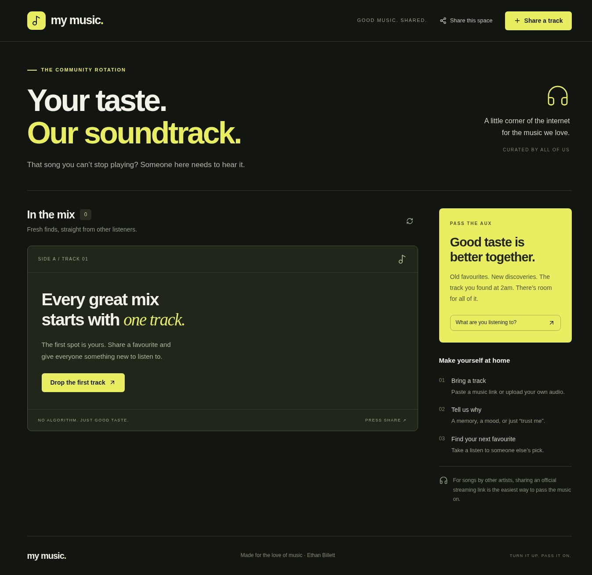

01 / COMMUNITY MUSICA SHARED LISTENING SPACE
My Music.
A fun place to share the tracks I’m enjoying and discover other people’s picks.
Explore the project ↗ETHAN BILLETT · WEB PROJECTS
A couple of web projects exploring how people can connect around the things they enjoy and the things they’re learning.

01 / COMMUNITY MUSICA SHARED LISTENING SPACE
A fun place to share the tracks I’m enjoying and discover other people’s picks.
Explore the project ↗ 02 / STUDENT COMMUNITY
02 / STUDENT COMMUNITY
LEARN BETTER TOGETHER
A student community concept for asking questions and sharing helpful study resources.
Explore the project ↗